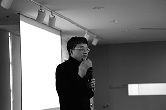
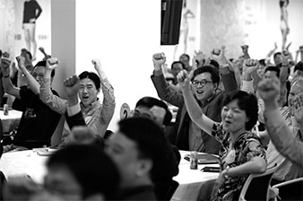

2020년, 유한킴벌리는 희망을 노래합니다.
함께 하는 새로운 도약 사랑하는 이해관계자 여러분, 안녕하세요. 유한킴벌리는 2019년에 창립 49주년을 맞이합니다.
열네 번째로 발간하는 지속가능성보고서를 통해 유한킴벌리가 경제, 사회, 환경적 성과를 공유하게 됨을 기쁘게 생각합니다.
유한킴벌리는 어려움에 직면했을 때 혁신을 통해 반드시 해결책을 찾아내는 강한 조직문화(Winning Culture)가 있습니다.
유한킴벌리는 사회와 함께 성장한 기업으로서, 사회의 문제 해결에 앞장서면서 회사와 사회가 함께 성장해왔던 역사를 갖고 있습니다.
유한킴벌리는 이 보고서를 통해 여러 부족함에도 불구하고, 기업으로서 책임을 다하기 위한 위닝 컬처의 여정에 여러분을 초대합니다.

